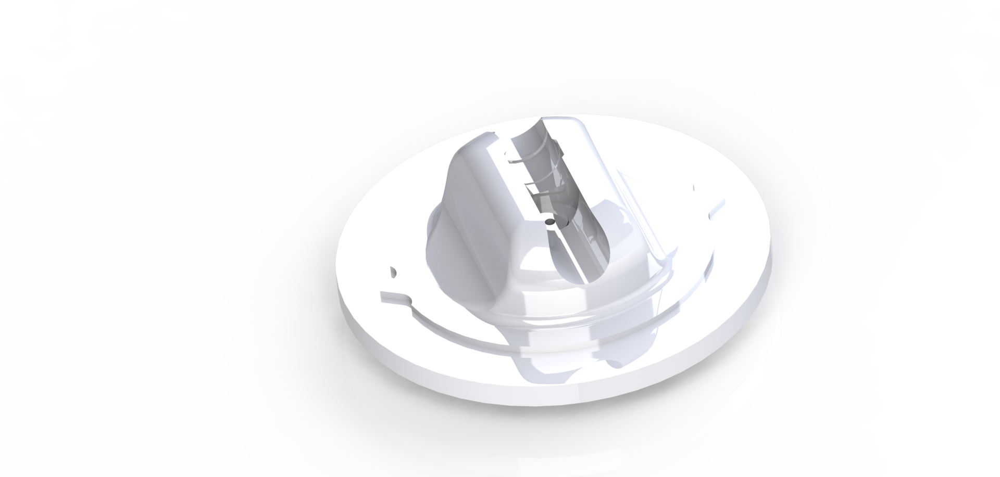

This is a simple device that I designed and 3D printed to take care of the need to precisely measure angles over long distances where triangulation is not possible. I was doing a mapping project and needed to be able to acurately measure the angle between two lines, but I was not able to accurately measure distances or get far enough away from the intersection to reliably use trigonometry to compute the angle. So I designed this gadget.
It consists, essentially, of three parts: a base that can be mounted on a tripod, a turret mount for a powerful laser pointer that spins on the base, and a graduated ring that spins independently from both parts. To use it, you simply aim the laser at a point down one of the lines you are measuring between, slide the graduated ring to align the zero degree mark with one of the indicators on the turret, then turn the laser to point along the other line and read the angle. Because the laser is powerful enough that the beam is visible, it is not really even necessary to have a point to aim at. You can simply align the beam with the line by eye.
The ring-shaped groove visible in this render allows for easy and accurate operation because twisting the laser pointer in the turret has the effect of depressing the momentary button as it slides into the groove so that the laser stays on while it is twisted. It is an elegant and effective solution in that it does not require holding the button down or wiring in an additional switch.